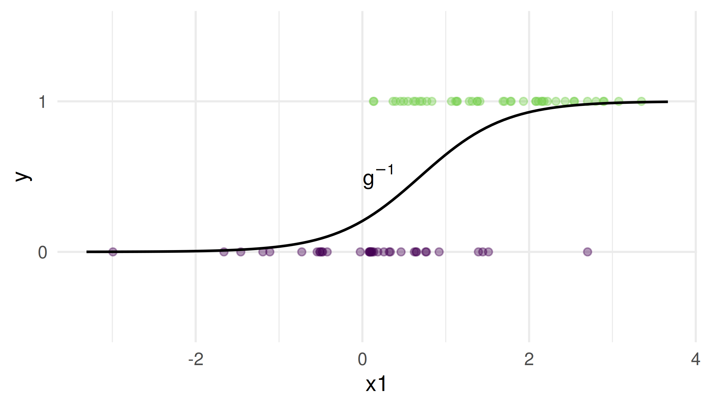
Machine learning
Week 3: classification, and causality (part 1)
Joshua Loftus
LSE
Week 3: classification, and causality (part 1)
Part 1: classification, and what a mistake costs
Part 2: causality and interventions
Where week 2 left the target
Week 2, the optimal model theorem: under squared loss the best predictor of \(Y\) from \(X\) is the conditional mean, \(f^\star(x) = \mathbb E[Y \mid X = x]\), and any other \(f\) pays \(\mathbb E[(f^\star(X) - f(X))^2]\) on top of it.
Today the outcome is a label: \(Y \in \{0, 1\}\).
Write down what \(\mathbb E[Y \mid X = x]\) is when \(Y\) takes only the values \(0\) and \(1\). Then write one thing a straight line \(x^\top\beta\) gets wrong about it.
The target is a probability
For a \(0/1\) outcome the conditional mean is a probability: \[ p(x) = P(Y = 1 \mid X = x) = \mathbb E[Y \mid X = x] \]
So the optimal model theorem’s target is the class probability \(p(x)\), and a fitted model gives an estimate \(\hat p(x)\)
A line \(x^\top\beta\) does not stay inside \([0, 1]\): that is the first thing logistic regression fixes
Notation for today: \(p(x)\) the class probability, \(\hat p(x)\) its estimate, and a threshold \(c\): predict \(1\) when \(\hat p(x) > c\)
Classification
- Supervised learning with categorical/qualitative outcomes
(in contrast to regression, with numeric outcomes)
Often called “labels”, \(K\) = number of unique classes
Binary: positive/negative or 0/1 or yes/no or success/fail etc
Label names not mathematically important - e.g. use \(1, ..., K\)
Limitations: labels already defined (not learned from data– that would be unsupervised learning), \(K\) is fixed
Plots: often use color/point shape for categorical variables
Interpretable classification
Logistic regression
\[\mathbb E(Y| \mathbf X = \mathbf x) = g^{-1}(\mathbf x^T \beta)\] \[g(p) = \log{\left(\frac{p}{1-p}\right)}\]
Generalized linear models (GLMs)
- Various “link” functions \(g\)
- Linear regression is a special case with \(g = \text{id}\)
- Logistic in
R:glm(..., family = binomial()) - Others: Poisson, multinomial, …, see
?familyinR
One predictor, “S curve”
Classifications/decisions: threshold probability
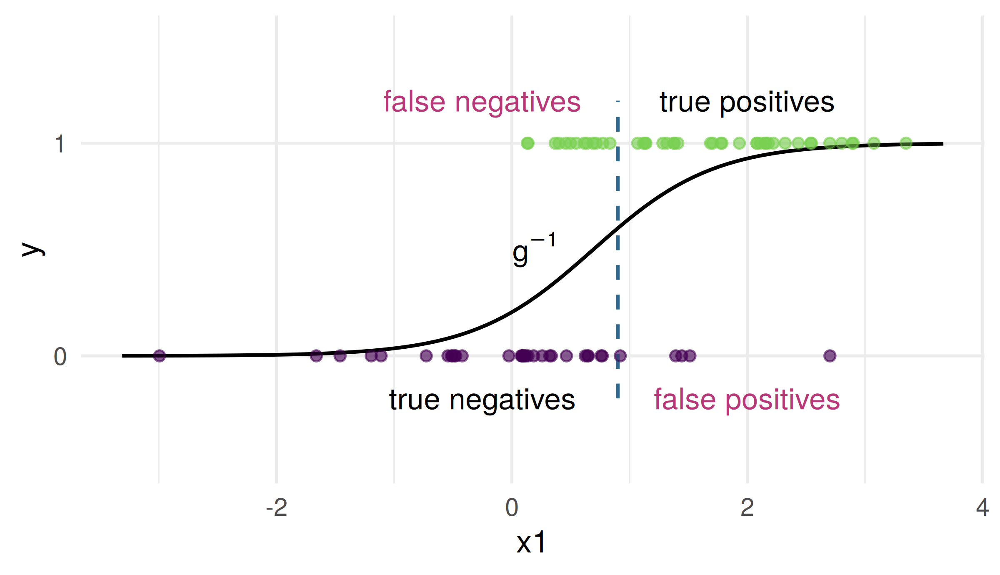
Contours of GLM-predicted class probabilities
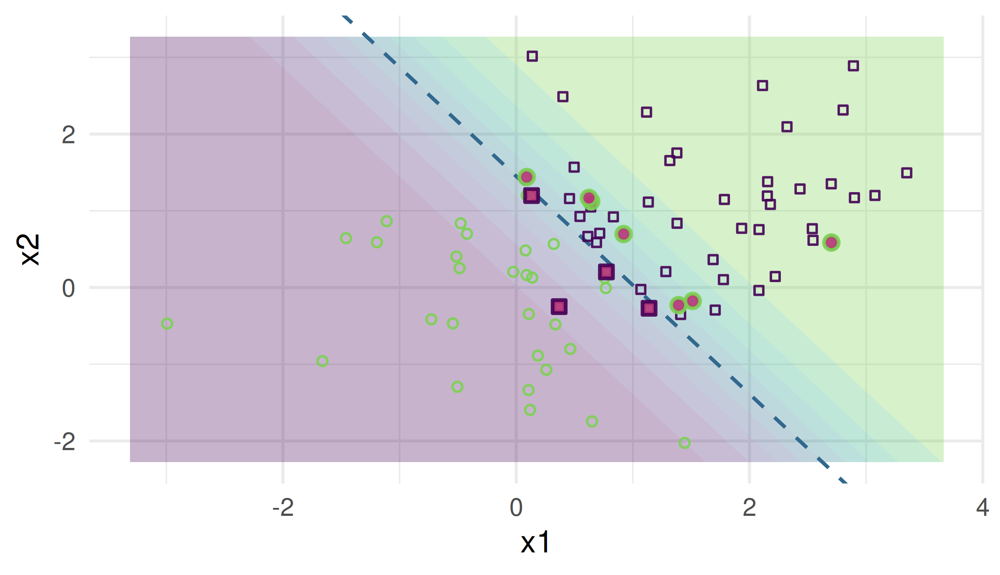
Classification boundaries
Classification boundaries with
\(p = 3\) predictors
Boundary = plane
\(p > 3\) predictors
Boundary = hyperplane
(In practice, “high-dimensional” = can’t easily plot it)
Interpretation: coefficients
# A tibble: 3 × 5
term estimate std.error statistic p.value
<chr> <dbl> <dbl> <dbl> <dbl>
1 (Intercept) -2.24 0.656 -3.42 0.000635
2 x1 2.17 0.584 3.72 0.000198
3 x2 1.53 0.499 3.07 0.00215 Coefficient scale: log-odds? Exponentiate \(\to\) odds
Interpretation: inference and diagnostics
Fitted by maximum likelihood; how
glmdoes it: next weekMLEs \(\to\) asymptotic normality for intervals/tests
summary(), coef(), confint(), anova(), etc in R
- “Deviance” instead of RSS
# A tibble: 1 × 8
null.deviance df.null logLik AIC BIC deviance df.residual nobs
<dbl> <int> <dbl> <dbl> <dbl> <dbl> <int> <int>
1 110. 79 -25.8 57.5 64.7 51.5 77 80- Because \(y\) is 0 or 1, residual plots will show patterns, not as easy to interpret geometrically
Challenges
Separable case (guaranteed if \(p > n\))
If classes can be perfectly separated, the MLE is undefined, fitting algorithm diverges as \(\hat \beta\) coordinates \(\to \pm \infty\)
Awkwardly, classification is too easy(!?) for this probabilistic approach
Curse of dimensionality
Biased MLE and wrong variance/asymp. dist. if \(n/p \to \text{const}\), even if \(> 1\)
Classification summary
- Numeric prediction \(\to\) classification
\[\hat y = \mathbb I(\hat p > c) = \begin{cases} 0 & \text{ if } \hat p \leq c \\ 1 & \text{ if } \hat p > c \end{cases}\]
Log-odds function is monotonic, so (hyperplanes)
\[\hat p > c \leftrightarrow x^T \beta > c'\]
- More classes: transform to binary, predict using largest \(\hat p_k\)
- Non-linear boundaries: transformation of predictors, or use methods other than GLMs (we’ll learn more soon)
- Some classification methods output categorical classes, not probabilities (or other numeric scores)
Two kinds of mistake
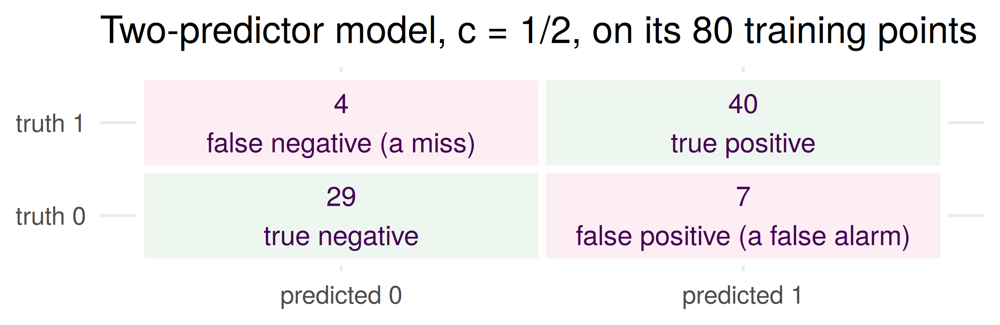
Move \(c\) and the two kinds of mistake trade against each other. The two numbers that move: the true positive rate (TPR, sensitivity, recall) \(= \text{TP}/(\text{TP} + \text{FN})\) and the false positive rate (FPR, one minus specificity) \(= \text{FP}/(\text{FP} + \text{TN})\)
Accuracy \(= (\text{TP} + \text{TN})/n\) hides the split. With 95% zeros, predicting \(0\) for everyone already scores 95%
ROC: the curve invented for radar
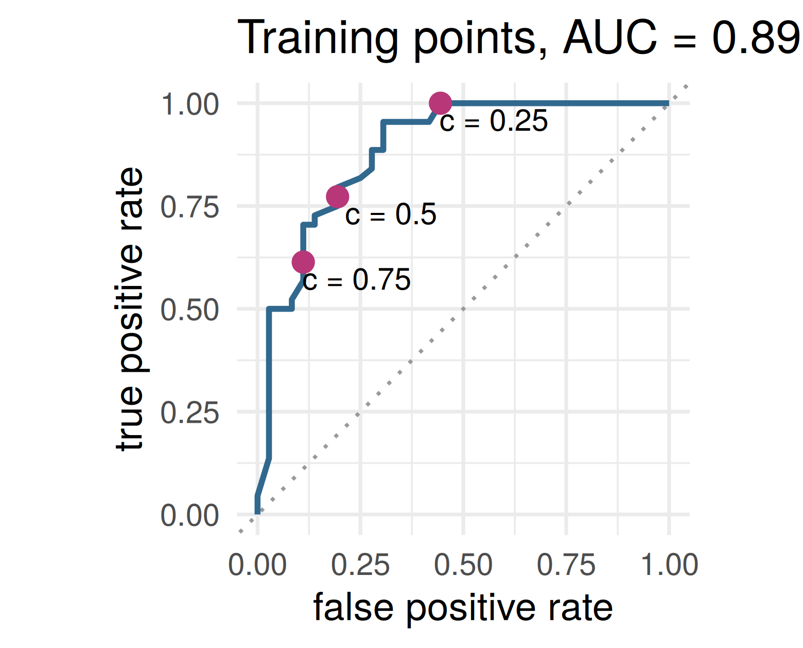
The receiver operating characteristic: one point per threshold \(c\), from \(c = 1\) (predict \(0\) for everyone, bottom left) to \(c = 0\) (top right)
Lower \(c\): catch more of the 1s, raise more false alarms
AUC, the area under it: the probability that a random 1 scores above a random 0 (a tie counts half), a ranking quality that never asks where \(c\) is
Named for radar receivers in the 1940s. It does not answer the operator’s question: which point?
What does a mistake cost?
Predicting \(1\) when the truth is \(0\) costs \(c_{FP}\); predicting \(0\) when the truth is \(1\) costs \(c_{FN}\); a correct prediction costs nothing
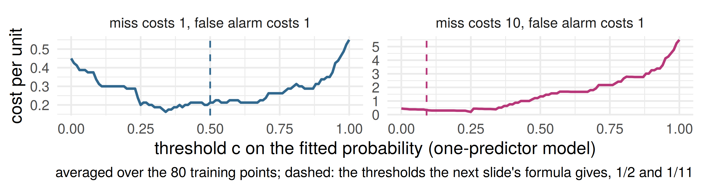
A miss costs ten times a false alarm and the model says \(\hat p = 0.3\). Predict \(1\) or \(0\)?
Optimal threshold theorem
Optimal threshold theorem. Let \(p(x) = P(Y = 1 \mid X = x)\), and let a false positive cost \(c_{FP}\) and a false negative \(c_{FN}\), both \(\ge 0\) and not both \(0\). The rule that minimizes expected cost at \(x\) predicts \(1\) exactly when \[ p(x) > c^\star = \frac{c_{FP}}{c_{FP} + c_{FN}}, \] and at \(p(x) = c^\star\) either prediction is optimal. Equal costs give \(c^\star = \tfrac12\): predict the more probable class, the Bayes classifier.
The model supplies \(p\); the costs supply \(c^\star\), and somebody chose the costs. With \(\hat p\) in place of \(p\) it is a plug-in rule, only as good as the estimate.
Proof: exercise 1 in the notebook, before the seminar. The same argument as week 2’s optimal model theorem: minimize the expected loss one \(x\) at a time.
One slide on the support vector machine
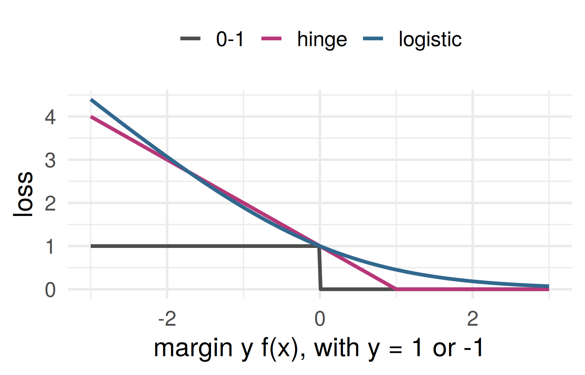
Vapnik, Bell Labs, 1990s: forget probabilities, find the boundary with the widest margin
Equivalent to minimizing the hinge loss \(\max(0, 1 - y f(x))\) plus a penalty on \(\|\beta\|\) (week 7)
Same picture as logistic regression, a different loss; the kernel trick makes the boundary curved
Its output is a score, not a probability: the cost threshold above does not apply to it as it stands
No free lunch
No free lunch (stated). No method has lower error than every other on every distribution.
Intuition, not a proof: the labels a method has seen say nothing, by themselves, about the points it has not seen
Exercise 4 proves a version: on a finite domain, averaged over all labelings, every method’s error on unseen points is exactly \(\tfrac12\)
So choosing a method is an assumption about the world. It does not say that methods are equally good on the problems we actually meet
In week 1’s seminar you scored a straight line and \(k\) nearest neighbors on the same 42 held-out countries. Suppose the line had won by more than a standard error. Is that a fact about the two methods, or about the data?
Causality, part 1
Week 1, concepts that keep coming back: prediction \(\neq\) explanation \(\neq\) intervention.
A model predicts life expectancy from GDP per capita well on held-out countries. A minister raises GDP per capita by ten percent. What does the model say happens to life expectancy? Do you believe it?
History: from the stars to “Poor Law Statistics”
- Almost a century after Gauss
- Scientists correlating/regressing anything
- Problem: what does it mean?
e.g. Francis Galton correlated numeric traits between generations of organisms…
But why? “Nature versus nurture” debate (still unresolved?)
e.g. Udny Yule and others correlated poverty (“pauperism”) with welfare (“out-relief”)…
History: origin of multiple regression
Udny Yule (1871-1951)
Studied this poverty question
First paper using multiple regression in 1897
Association between poverty and welfare while “controlling for” age

History: Yule, in 1897
Instead of speaking of “causal relation,” … we will use the terms “correlation,” …
- Variables, roughly:
- \(Y =\) prevalence of poverty
- \(X_1 =\) generosity of welfare policy
- \(X_2 =\) age
- Positive correlations:
- \(\text{cor}(Y, X_1) > 0\)
- \(\text{cor}(X_2, X_1) > 0\)
Do more people enter/stay in poverty if welfare is more generous?
Or is this association “due to” age?
History: Yule, in 1897
The investigation of causal relations between economic phenomena presents many problems of peculiar difficulty, and offers many opportunities for fallacious conclusions.
Since the statistician can seldom or never make experiments for himself, he has to accept the data of daily experience, and discuss as best he can the relations of a whole group of changes; he cannot, like the physicist, narrow down the issue to the effect of one variation at a time. The problems of statistics are in this sense far more complex than the problems of physics.
[We] cannot […] narrow down the issue to the effect of one variation at a time
but… isn’t this how almost everyone interprets regression coefficients?…
🤔 🤨
(yes! and they are wrong!!!!)
Warning: don’t go this way
the next slide is about some common mistakes people make when interpreting regression coefficients
(don’t try to memorize the formulas)
Interpreting regression coefficients
People want these things to be true:
- “The linear model and our estimates are both good”
\[\frac{\partial}{\partial x_j} \mathbb E[\mathbf y | \mathbf X] = \beta_j \approx \hat \beta_j\]
- “We can interpret \(\beta_j\) as a causal parameter,” i.e. intervening to increase \(x_j\) by 1 unit would result in conditional average of \(y\) changing by \(\beta_j\) units
\[ \text{If } (x_j \mapsto x_j + 1) \text{ then } (\mathbb E[y] \mapsto \mathbb E[\mathbf y | \mathbf X] + \hat \beta_j) \]
But this almost never works!
Ceteris paribus
Many textbooks tell us something like:
“The coefficient \(\hat \beta_j\) estimates the relationship between the (conditional mean of the) outcome variable and \(x_j\) while holding all other predictors constant”
i.e. “ceteris paribus” or “other things equal” (unchanged)
Fundamental problem of interpreting regression coefficients:
“holding all other predictors constant” is (almost) never applicable in the real world, i.e. ceteris is (almost) never paribus
Reasons we’ll highlight: causality (today) and nonlinearity (the additive-models week)
Interpreting causality
Back to Yule. What does \(\hat \beta_\text{welfare}\) mean?
Are these associations “causal”?
Yule found a positive association between welfare and poverty after “controlling for” age
Which is the cause and which is the effect?
Both? Neither?
History: another important historic example
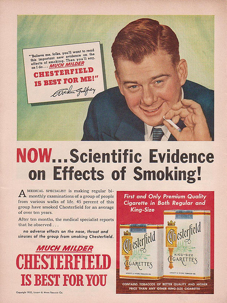
Smoking and lung cancer
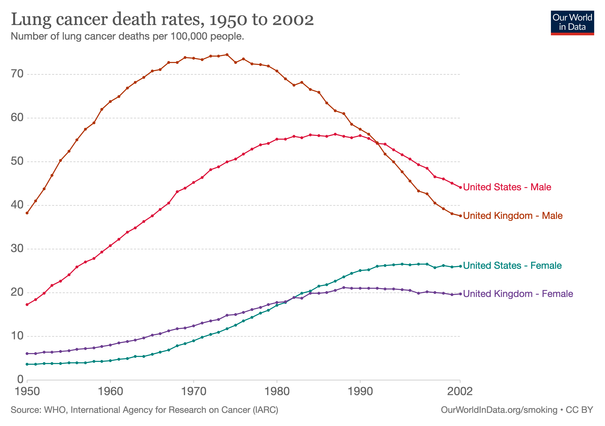
(don’t smoke)
R. A. Fisher on smoking and lung cancer (in 1957)
… the B.B.C. gave me the opportunity of putting forward examples of the two classes of alternative theories which any statistical association, observed without the predictions of a definite experiment, allows–namely, (1) that the supposed effect is really the cause, or in this case that incipient cancer, or a pre-cancerous condition with chronic inflammation, is a factor in inducing the smoking of cigarettes, or (2) that cigarette smoking and lung cancer, though not mutually causative, are both influenced by a common cause, in this case the individual genotype …
Graphical notation for causality
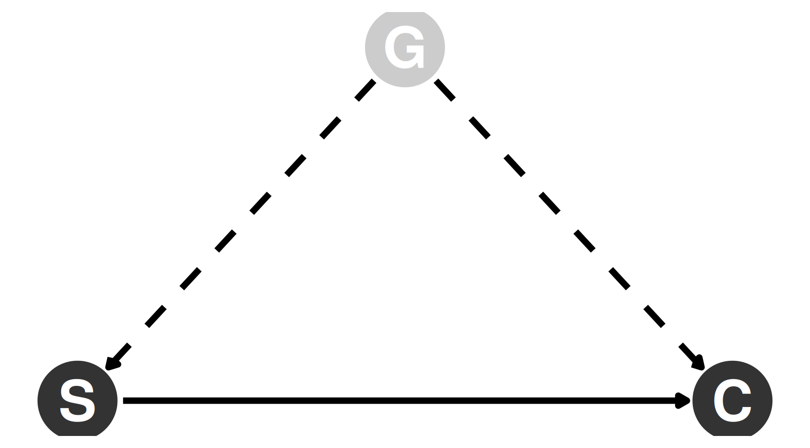
Variables: vertices (or nodes)
Relationships: directed edges (arrows)
Shaded node / dashed edges: unobserved variable
Two of Fisher’s theories
Smoking causes cancer?
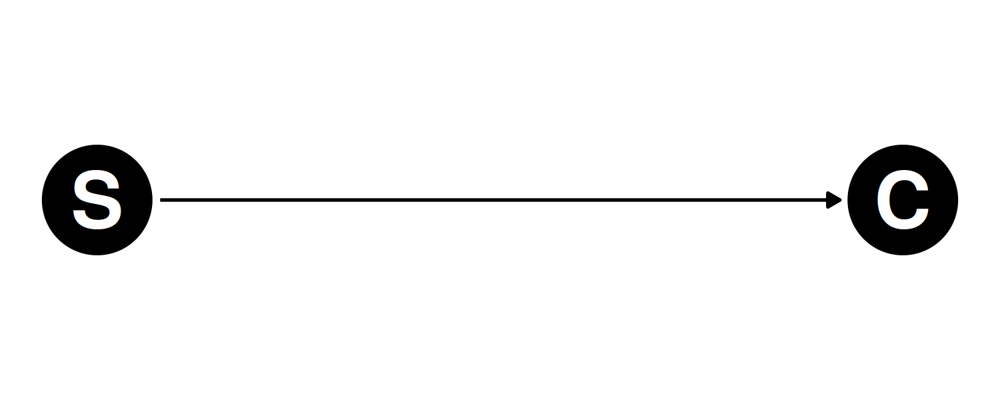
Genotype is a common cause?
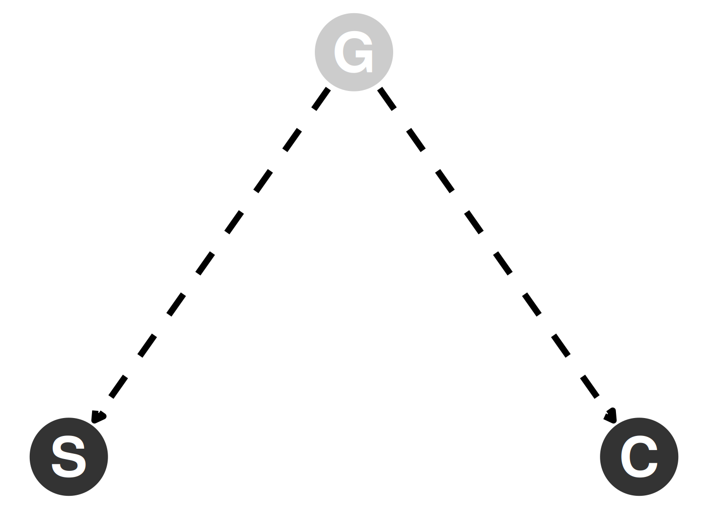
Fisher: association is not causation
(He did not use graphical notation like this)
Idea: adjusting for confounders
Confounders: other variables that obscure the (causal) relationship from \(X\) to \(Y\), e.g.
- \(Y\): health outcome
- \(X\): treatment dose
- \(Z\): disease severity
Without considering \(Z\), it might seem like larger doses of \(X\) correlate with worse health outcomes
Solution: add more variables to the model
Including (measured) confounders in the regression model may give us a more accurate estimate
(My conjecture: Fisher used genes as his example confounder because, in his day, they could not be measured, so his theory would be harder to disprove)
Confounder adjustment is why some people think multiple regression is One Weird Trick that lets us make causal conclusions
(Statisticians Don’t Want You To Know!)
It’s not that simple, and DAGs can help us understand why!
Simple models for causality
Think about interventions that change some target variable \(T\)
Forget about the arrows pointing into \(T\) (intervention makes them irrelevant)
Change \(T\), e.g. setting it to some arbitrary new value \(T = t\)
This change propagates along directed paths out of \(T\) to all descendant variables of \(T\) in the graph, causing their values to change
(All of these changes could be deterministic, but most likely in our usage they are probabilistic)
Which variables change?
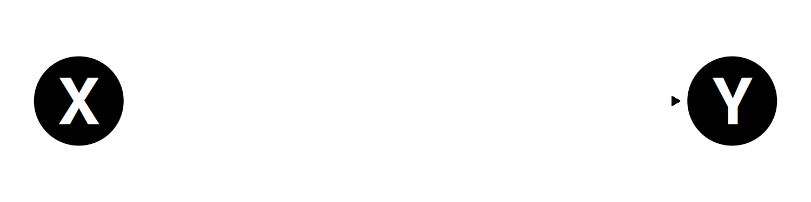
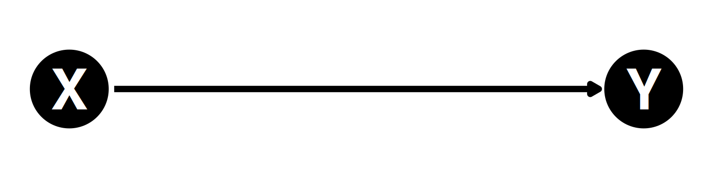
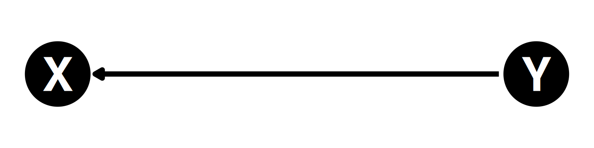
Exercise: in each of these cases, if we intervene on \(X\) which other variable(s) are changed as a result?
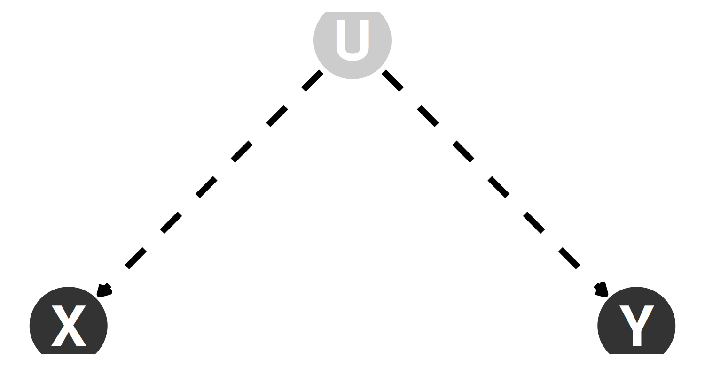
Explaining an observed correlation
We find a statistically significant correlation between \(X\) and \(Y\)
What does it mean?
- False positive (spurious correlation)
- \(X\) causes \(Y\)
- \(Y\) causes \(X\)
- Both have common cause \(U\) [possibly unobserved]
Statistically indistinguishable cases (without “experimental” data)
Importantly different consequences!
Three worlds, one slope
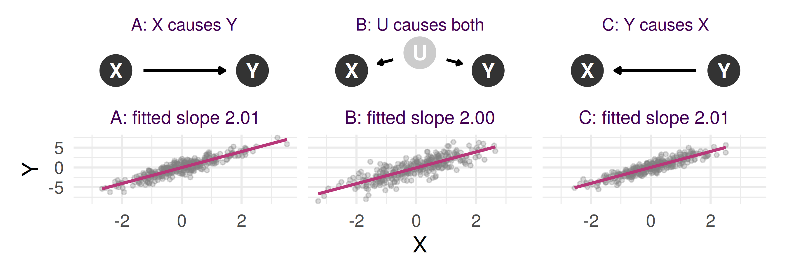
300 simulated units per world. The population slope of \(Y\) on \(X\) is exactly \(2\) in all three
We now set \(X\) to \(X + 1\) for every unit and recompute with the same noise. In which of the three worlds does \(Y\) change, and by how much?
Three worlds, one slope, one intervention
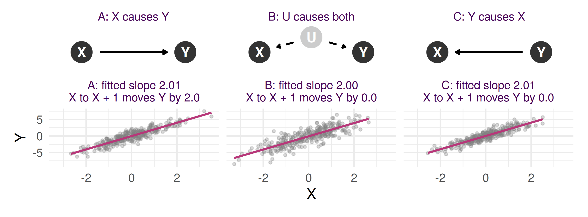
One fitted slope, three worlds, and acting on it works in exactly one: raising \(X\) by one unit moves \(Y\) by \(2\) in A and by \(0\) in B and C. Suppose each mechanism generated the data; apply the method; what happens when someone acts on it?
Writing an intervention down
Behind a DAG is a structural model: one equation per variable, from its parents and its own noise. With \(T\) the target, \(Y\) the outcome and \(Z\) the other variables that matter: \[ T = h(Z, \varepsilon_T), \qquad Y = g(T, Z, \varepsilon_Y), \qquad Z,\ \varepsilon_T,\ \varepsilon_Y \text{ independent} \]
Intervene on \(T\), written \(do(T = t)\): delete \(T\)’s equation, set \(T = t\), recompute everything downstream with the same noise. \(Z\) keeps its value
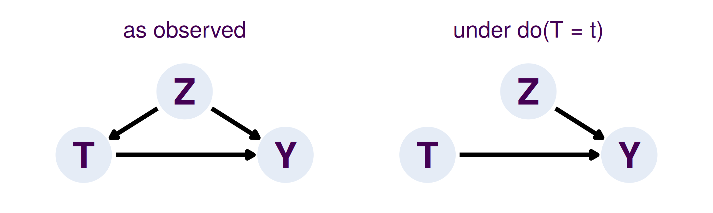
Recovering the effect from what we observe
Under \(do(T = t)\) the outcome is \(g(t, Z, \varepsilon_Y)\), so \(\mathbb E[Y \mid do(T = t)] = \mathbb E\, g(t, Z, \varepsilon_Y)\). Compare \(\mathbb E[Y \mid T = t]\): the average \(Y\) among the units that happened to have \(T = t\)
From observed \((T, Z, Y)\), with \(Z\) observed, we can estimate conditional means such as \(\mathbb E[Y \mid T = t, Z]\)
Write down what you would compute from the observed data to get \(\mathbb E[Y \mid do(T = t)]\), and what has to be true of \(Z\) for it to work.
The confounding gap
The same DAG, made linear: \(T = \alpha Z + \varepsilon_T\), \(\;Y = \tau T + \gamma Z + \varepsilon_Y\), noises independent with mean \(0\) \[ \mathbb E[Y \mid do(T = 1)] - \mathbb E[Y \mid do(T = 0)] = \tau \] \[ \mathbb E[Y \mid T = 1] - \mathbb E[Y \mid T = 0] = \tau + \gamma\,\big(\mathbb E[Z \mid T = 1] - \mathbb E[Z \mid T = 0]\big) \]
Week 2, omitted-variable bias: regressing on \(\mathbf x_1\) alone gives \(\mathbb E\hat\beta_{\text{short}} = \beta_1 + \beta_2\hat\delta\), with \(\hat\delta\) the slope of \(\mathbf x_2\) on \(\mathbf x_1\).
The naive difference is the effect plus what \(Z\) contributes through selection: omitted-variable bias, read causally. Derivation: exercise 2.
Adjustment theorem
Adjustment theorem. Structural model with independent noises, \(Z\) observed: \(T = h(Z, \varepsilon_T)\), \(Y = g(T, Z, \varepsilon_Y)\). Wherever \(P(T = t \mid Z) > 0\), \[ \mathbb E[Y \mid do(T = t)] = \mathbb E_Z\Big[\, \mathbb E[Y \mid T = t, Z]\, \Big] \] Corollary (\(Z\) empty, \(T\) randomized): \(\mathbb E[Y \mid do(T = t)] = \mathbb E[Y \mid T = t]\).
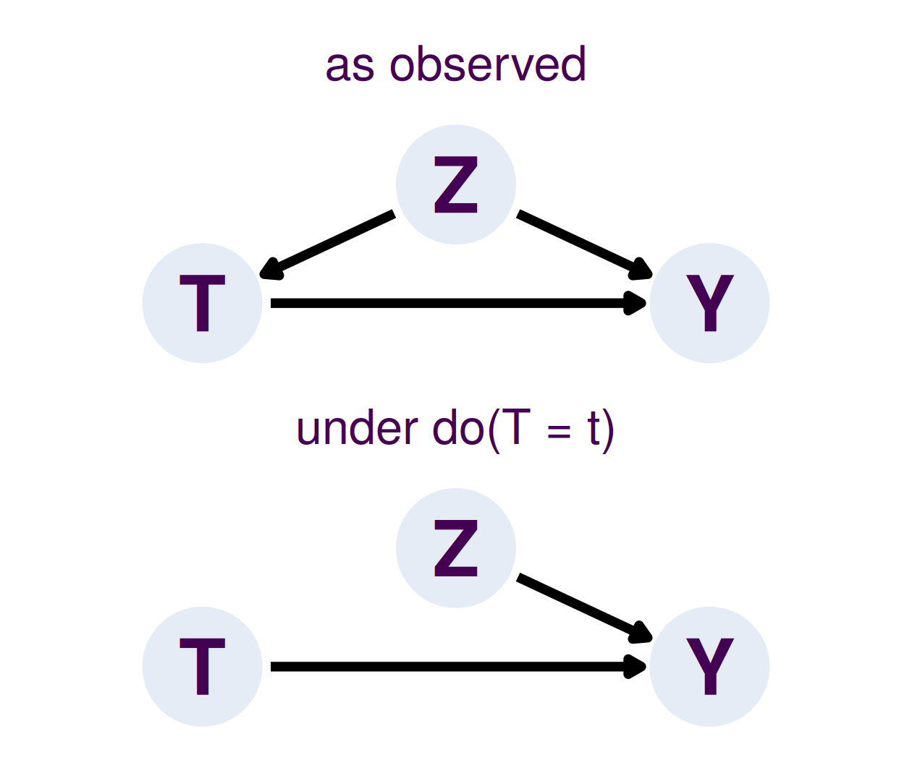
Fix \(T\) at \(t\), average the conditional mean over the population’s \(Z\). Condition, in words: \(Z\) holds every common cause of \(T\) and \(Y\) and no consequence of \(T\).
Adjustment theorem, lines 1–2
Under \(do(T = t)\), \(Y = g(t, Z, \varepsilon_Y)\) with \(Z\) and \(\varepsilon_Y\) unchanged. Write \(m_t(z) = \mathbb E\big[g(t, z, \varepsilon_Y)\big]\), the average over the noise with \(Z\) frozen at \(z\)
\(\varepsilon_Y\) is independent of \(Z\), so freezing \(Z\) at \(z\) leaves the noise alone, and the tower property gives \[ \mathbb E[Y \mid do(T = t)] = \mathbb E\big[g(t, Z, \varepsilon_Y)\big] = \mathbb E_Z\big[m_t(Z)\big] \]
As observed, on \(\{T = t, Z = z\}\) the outcome is \(g(t, z, \varepsilon_Y)\). \(T = h(Z, \varepsilon_T)\) and \(\varepsilon_Y\) is independent of \((Z, \varepsilon_T)\), so of \((T, Z)\): \[ \mathbb E[Y \mid T = t, Z = z] = \mathbb E\big[g(t, z, \varepsilon_Y) \mid T = t, Z = z\big] = m_t(z) \]
Adjustment theorem, lines 3–4
Both sides are \(m_t(z)\) at every \(z\) with \(P(T = t \mid Z = z) > 0\). \(Z\) is upstream of \(T\), so its distribution is the same as observed and under the intervention. Average over it: \[ \mathbb E[Y \mid do(T = t)] = \mathbb E_Z\big[m_t(Z)\big] = \mathbb E_Z\Big[\,\mathbb E[Y \mid T = t, Z]\,\Big] \qquad\blacksquare \]
Corollary. \(Z\) empty: \(T = h(\varepsilon_T)\) is independent of \(\varepsilon_Y\) (randomization), and the same lines give \(\mathbb E[Y \mid do(T = t)] = \mathbb E[Y \mid T = t]\)
Where it fails: a common cause left out of \(Z\) makes \(\varepsilon_T\) and \(\varepsilon_Y\) dependent (line 2 breaks); a \(Z\) that is a consequence of \(T\) changes under the intervention (line 1 breaks); \(P(T = t \mid Z = z) = 0\) leaves nothing to condition on
Conclusions
Wisdom from one of the great early statistical explorers
Measurement does not necessarily mean progress. Failing the possibility of measuring that which you desire, the lust for measurement may, for example, merely result in your measuring something else - and perhaps forgetting the difference - or in your ignoring some things because they cannot be measured.
Remember: regression coefficients do not necessarily mean causal relationships
Experiments
Actually do interventions while collecting data
Observational studies
Try to infer causal relationships without interventions, by using dark arts more/specialized assumptions/methods that require careful interpretation
(increasingly common due to superabundance of data)
Scientific progress: be wrong in more interesting/specific ways
Before the seminar
- This week: exercises 1 to 4 at the top of the notebook. The proof of the optimal threshold theorem; the confounding gap; today’s adjustment proof again, with the slides closed; and no free lunch on a finite domain
Causal inference
An exciting interdisciplinary field
Practically important, connections to ML
“Data scientists have hitherto only predicted the world in various ways; the point is to change it” - Joshua Loftus
ST310 Machine Learning